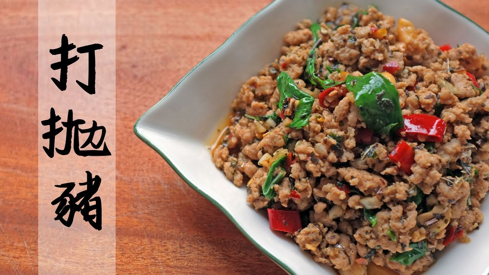

同時檸檬榨汁、小番茄切片備用。
2.依序放入醬油、魚露、檸檬汁、砂糖、白胡椒等攪拌均勻後，再放入小番茄一起拌炒。
3.等到絞肉帶點醬色、熟透後就可以加入九層塔，等到醬汁收得差不多即可起鍋
(喜歡醬汁也可以加一點水)。
起鍋。

咖哩飯介紹 絲瓜炒蛤蠣介紹 泰式檸檬魚介紹 心得
轨风 - 青空 【纯音乐】
Your browser does not support the audio element. Your browser does not support the video tag.